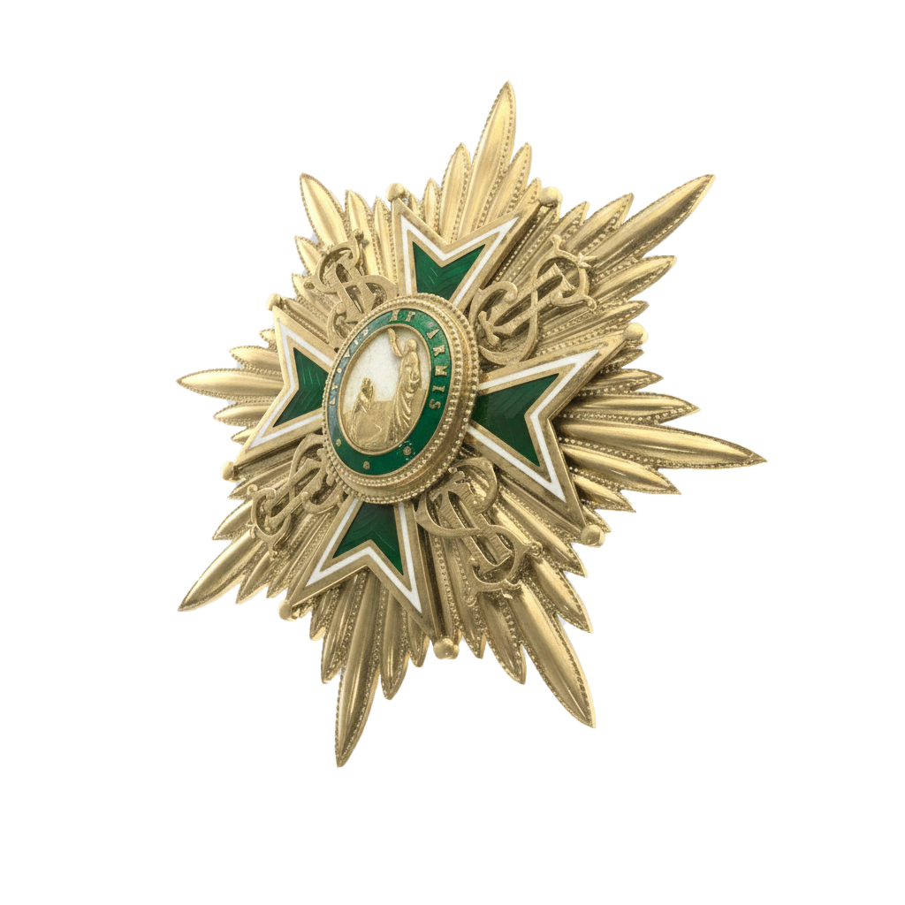
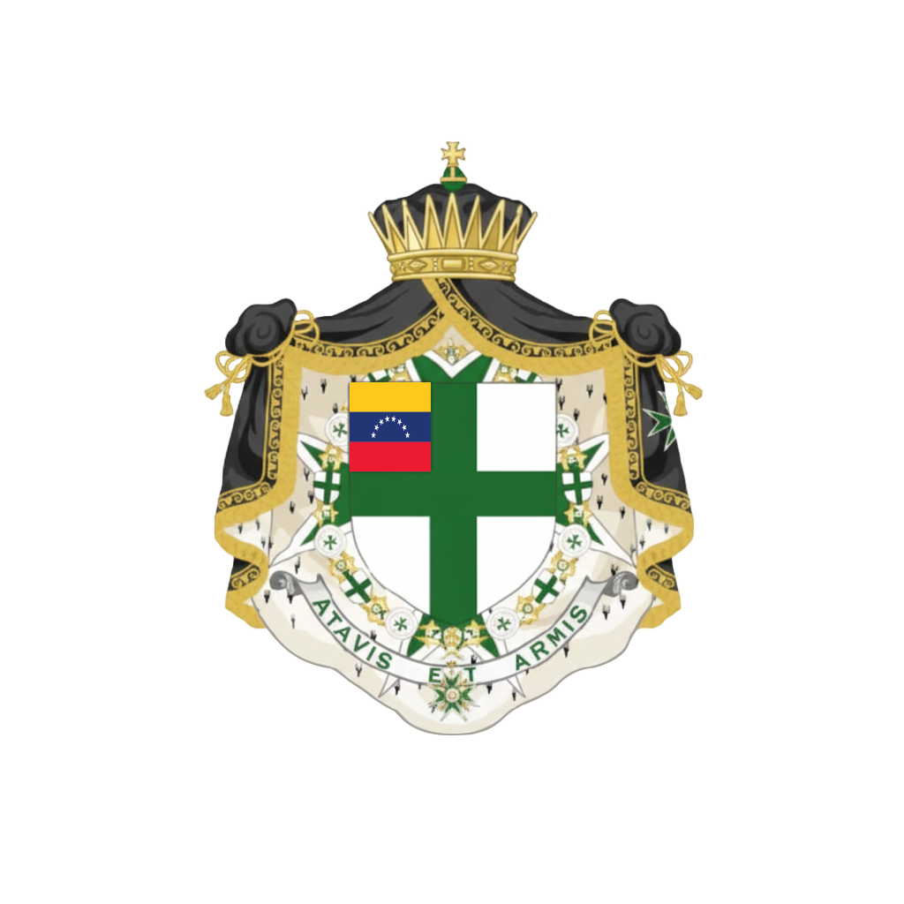
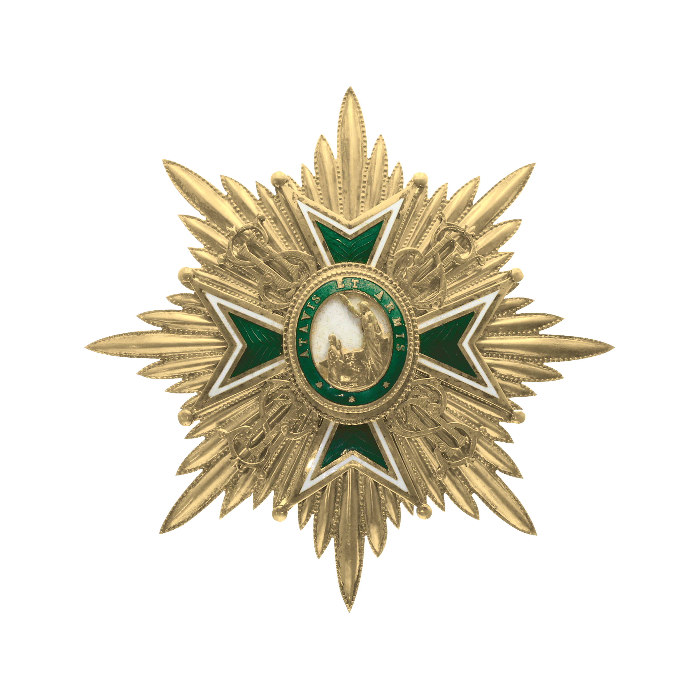
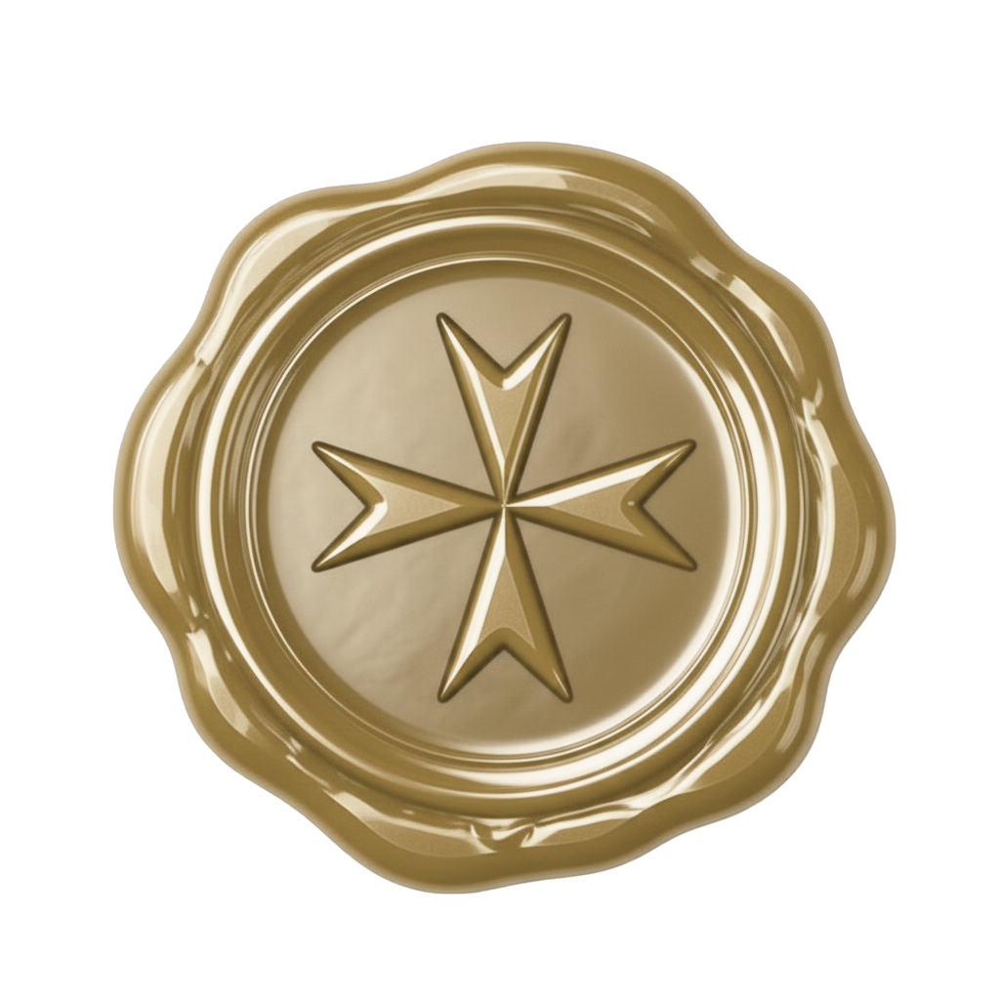
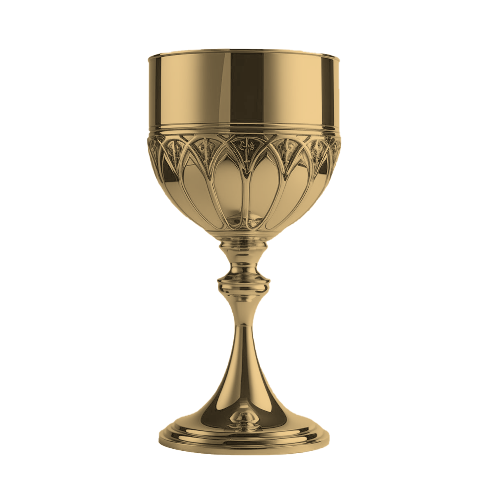
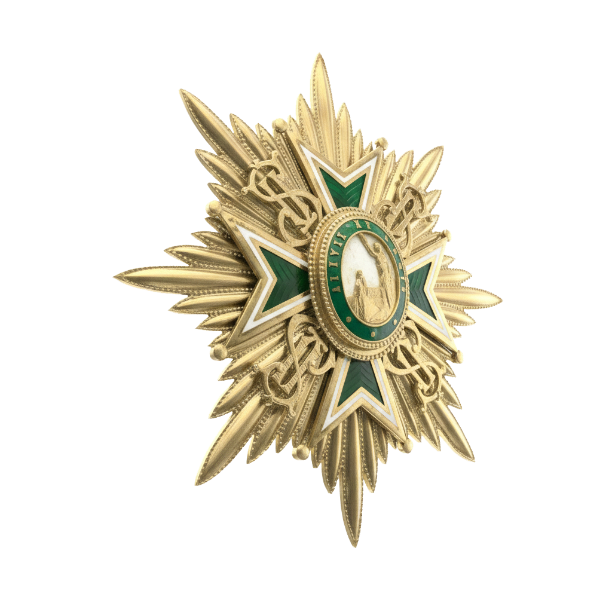

Bienvenido
Una de las órdenes de caballería más antiguas del mundo, presente en Venezuela con el compromiso de preservar sus valores de fe, honor y servicio humanitario.

Fundado para llevar los valores milenarios de la Orden a tierras venezolanas, congrega a caballeros y damas comprometidos con el servicio a la comunidad.
Consejo de Gobierno
Desde las Cruzadas del siglo XI hasta hoy, la Orden de San Lázaro ha mantenido una continuidad histórica única, sirviendo a los más vulnerables en cada época.
Conocer la Historia
La misión hospitalaria de la Orden trasciende los siglos: el cuidado de los enfermos y vulnerables sigue siendo el eje central de toda actividad institucional.
Fe · Servicio · Honor— Quiénes Somos
La Orden Militar y Hospitalaria de San Lázaro de Jerusalén es una de las instituciones caballerescas con mayor continuidad histórica en el mundo occidental. Su origen en Tierra Santa durante las Cruzadas la convirtió inicialmente en una orden dedicada al cuidado de los leprosos y enfermos.
A través de los siglos, la Orden ha mantenido su espíritu original adaptando su misión a cada época, sin perder los principios de fe cristiana, servicio humanitario y código de honor que constituyen su identidad.
El Capítulo Venezuela reúne a miembros comprometidos con estos ideales, contribuyendo activamente al bienestar de la comunidad venezolana bajo el estandarte de la Cruz Verde de San Lázaro.
"La estrella verde ilumina el camino del servicio y la caridad, principios sobre los que se funda esta noble institución desde sus orígenes en Tierra Santa."
Los valores que han guiado a la Orden a través de casi mil años de historia.
01
Enraizados en la tradición cristiana, los miembros cultivan una vida de fe profunda como fundamento de todo servicio y acción institucional.
02

Siguiendo el ejemplo de San Lázaro, la Orden dedica sus esfuerzos a la asistencia de los enfermos, vulnerables y necesitados.
03
La herencia caballeresca de casi mil años se preserva a través de ceremonias, investiduras y el código de honor que rige cada miembro.
Nuestra
Más de nueve siglos de fe, sacrificio y servicio humanitario que trascienden guerras, persecuciones y transformaciones históricas.
Orígenes
La Orden de San Lázaro tiene sus raíces en un hospital fundado en Jerusalén a principios del siglo XI, inicialmente destinado a la atención de peregrinos aquejados de lepra y otras enfermedades. Los caballeros que servían en este hospital tomaban votos religiosos similares a los de otras órdenes militares de la época, combinando la vida monástica con el servicio activo a los enfermos.
Durante las Cruzadas, la Orden adquirió un carácter marcadamente militar al mismo tiempo que mantenía su vocación hospitalaria. Sus miembros, muchos de ellos leprosos ellos mismos, se distinguían por su valentía extraordinaria en batalla, pues sabían que la muerte era ya su destino inevitable.
"Los caballeros de San Lázaro no temían a la muerte porque ya la llevaban consigo, y en ese desprendimiento encontraron la libertad para servir sin condición." — Crónica de las Cruzadas
Consolidación
Tras la caída de los estados cruzados, la Orden se estableció en Europa, encontrando protección en Francia, donde bajo el reinado de Enrique IV se unió formalmente a la Orden de Nuestra Señora del Monte Carmelo en 1608. Esta unión consolidó sus prerrogativas nobiliarias y le otorgó un marco legal sólido que permitió su expansión por todo el continente.
A lo largo de los siglos XVII, XVIII y XIX, la Orden sobrevivió revoluciones y guerras adaptando su misión a las circunstancias cambiantes, sin perder jamás su compromiso fundamental con el servicio a los enfermos y vulnerables.
Siglo XX & XXI
En el siglo XX la Orden se reorganizó y expandió a nivel internacional, estableciendo capítulos en América, Asia y África. Hoy cuenta con presencia en más de 50 países, manteniendo su misión hospitalaria a través de obras benéficas, apoyo a instituciones médicas y programas de ayuda humanitaria.
La estructura moderna de la Orden combina el respeto por las tradiciones caballerescas con una visión contemporánea del servicio, siendo reconocida internacionalmente como una institución de prestigio y sólida trayectoria ética.
Llegada a Venezuela
El Capítulo Venezuela fue establecido para llevar los valores milenarios de la Orden a tierras americanas. Desde su fundación, reúne a caballeros y damas comprometidos con el servicio a la comunidad venezolana, manteniendo una activa presencia en obras humanitarias, formación caballeresca y el fomento de los valores institucionales. El capítulo opera bajo la autoridad de la Gran Magistratura Internacional y se rige por los estatutos de la Orden adaptados a la realidad local.

Consejo de
Estructura de autoridad y línea de mando del Capítulo Venezuela de la Orden Militar y Hospitalaria de San Lázaro.
El gobierno del Capítulo Venezuela se ejerce a través de una estructura jerárquica que garantiza la correcta administración de la Orden, el cumplimiento de sus estatutos y la continuidad de su misión de servicio. Cada cargo tiene funciones definidas y responde a la autoridad del Gran Prior del Capítulo, quien a su vez depende de la Gran Magistratura Internacional.
Autoridad Suprema · Sede Internacional
Gran Maestre Internacional
Máxima Autoridad del Capítulo Venezuela
del Capítulo Venezuela
Cargo Institucional
Gestión administrativa, representación protocolar y coordinación institucional de la Orden.
Cargo Institucional
Administración financiera, gestión del patrimonio y rendición de cuentas del Capítulo.
Cargo Institucional
Correspondencia oficial, archivo institucional, actas y registros del Capítulo.
Cargo Institucional
Dirección del protocolo, investiduras, ceremonias y actos solemnes de la Orden.
Cargo Institucional
Guía espiritual de la Orden, conducción de la vida litúrgica y asistencia pastoral.